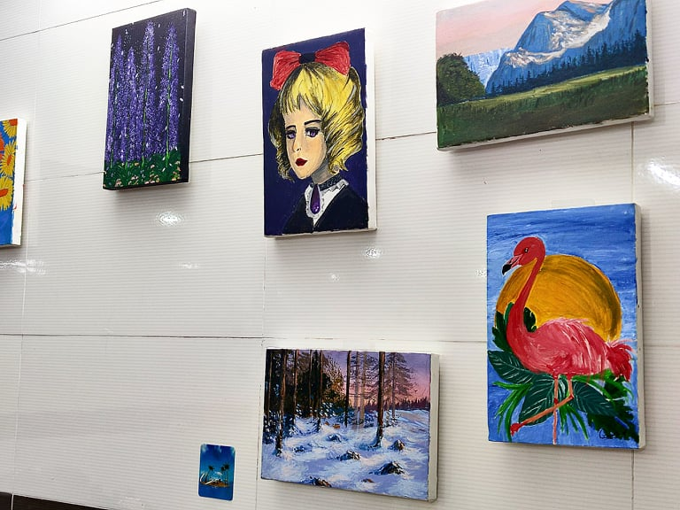
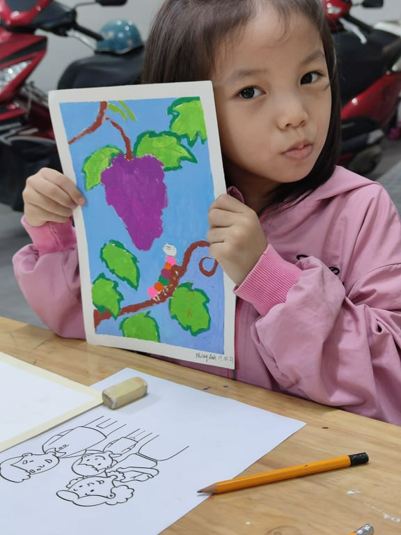
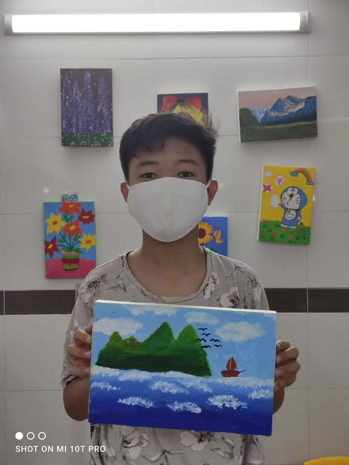
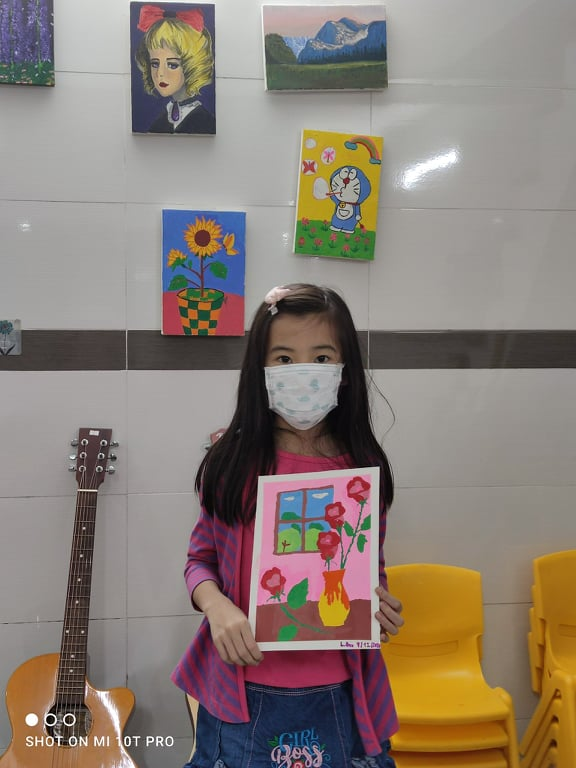
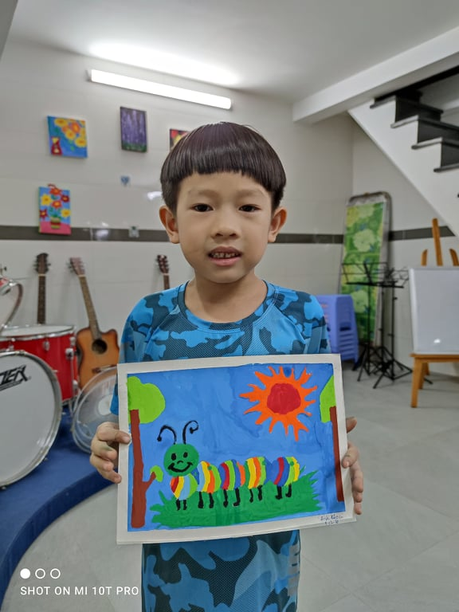
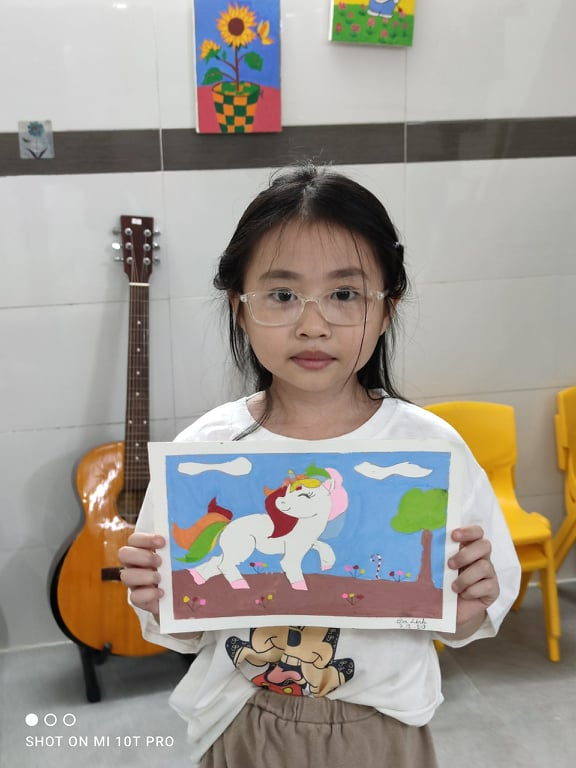
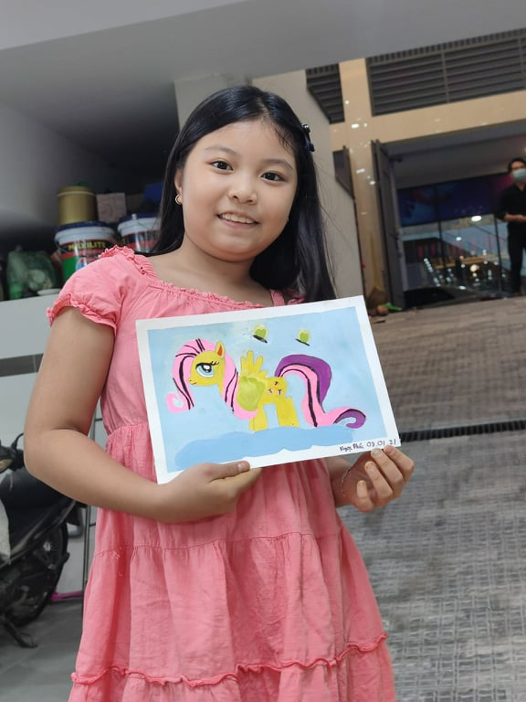

The music center has an area for children to come and paint as they like. I was do not like children at first, I thought they were so annoying until I have a chance to contact with them everyday.
And my small corner became a place where everyone in center could come and tell me about their day. Parents confide in me about their child, then I gradually understand a moms heart, when her kid has mental problem so he is such a hothead and became taciturn but super annoying.
If you know how to communicate with them, and they find can lean on you, children world is a cosy place to work with.





